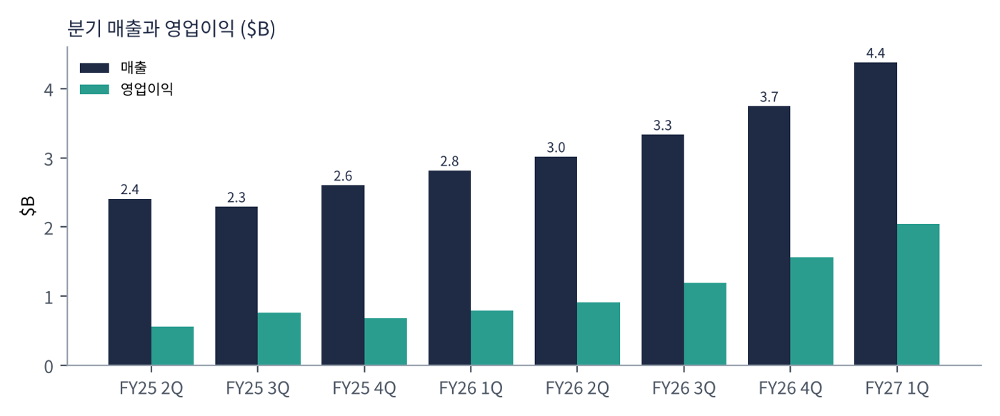
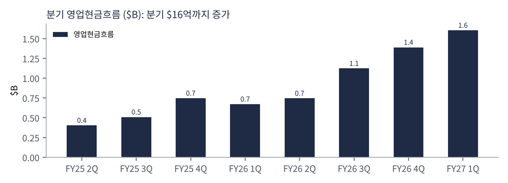
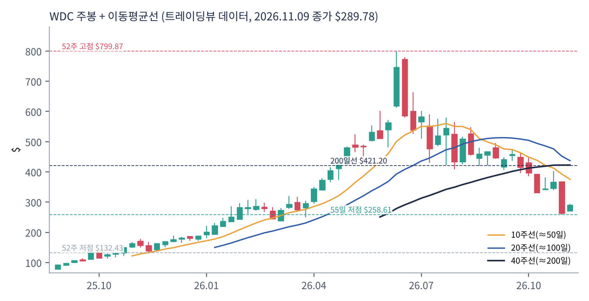
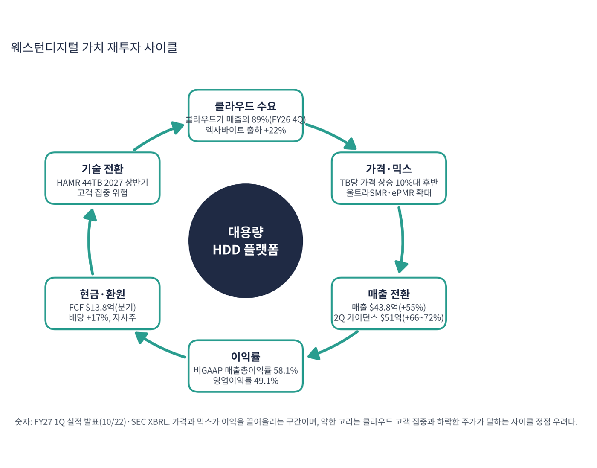

웨스턴디지털(WD)은 데이터센터용 대용량 하드디스크(HDD)를 만드는 세계 3대 업체 중 하나다. 2025년 플래시(낸드) 사업을 샌디스크로 분사한 뒤 순수 HDD 회사로 남았다. 클라우드 사업자가 AI·영상 데이터를 쌓으면서 HDD 수요와 가격이 동시에 올라 이익률이 크게 개선됐다. 주가는 52주 고점 $800에서 -64% 내려온 상태라 '실적은 최고인데 주가는 급락'이라는 괴리가 이 종목의 핵심 쟁점이다.
| 항목 | 내용 |
|---|---|
| 종목 | Western Digital Corporation (WDC) · NASDAQ · 하드디스크 · 본사 캘리포니아주 새너제이 |
| 시가총액 | 약 $1,085억 · TTM PER 11.3배(GAAP) · P/S 7.0배 · 11/9 종가 $289.78(+9.9%) |
| 최근 분기(FY27 1Q, 9월 말) | 매출 $43.81억(+55%), 영업이익 $20.46억(46.7%), 순이익 $17.79억, GAAP EPS $4.63, 비GAAP EPS $4.64(+161%) |
| 마진 | 비GAAP 매출총이익률 58.1%, 영업이익률 49.1% |
| 다음 분기 가이던스 | 2Q 매출 $51억±1억(+66~72%), 비GAAP 매출총이익률 60~61%, 비GAAP EPS $5.80±0.20 |
| 배당 | 분기 $0.175로 17% 인상 |
| 다음 실적 | FY27 2Q 실적: 2027년 1월 하순 예정(확인 필요) |
| 직책 | 인물 | 역할·특징 |
|---|---|---|
| CEO | 어빙 탠 | 2025년 분사 이후 순수 HDD 회사를 이끎. 'HAMR 기술 전환'과 고객 다변화를 강조 |
| CFO | 크리스 세네세이얼 | 가이던스·자사주·배당 계획을 설명하는 재무 책임자 |
경영 스타일: '용량당 원가를 낮추고 가격은 지킨다'. TB당 원가는 전년 대비 약 8% 낮아지고 판매가는 10%대 후반 올랐다. 분사 이후 부채를 갚아 순현금 $5억을 확보했고 FY26에 FCF $35억 중 $31억을 환원했다. 1분기에는 배당을 17% 올렸다. 가격 인상과 기술 전환을 함께 밀어붙이는 실행형 경영이다.
ePMR 40TB를 두 고객에게 양산 중이고 울트라SMR을 세 번째 하이퍼스케일러에 확대한다. 2027년 상반기 44TB HAMR 출시가 계획이며 고객 검증은 기대 이상이라고 회사는 밝혔다.
AI가 만드는 데이터가 폭증할수록 저장 용량당 원가가 가장 낮은 HDD 수요가 늘어난다는 논리다.
| 분기 | 매출 | 영업이익 | 영업이익률 | 순이익 | 영업현금 | GAAP EPS | 특이 사항 |
|---|---|---|---|---|---|---|---|
| FY25 2Q | $24.1억 | $5.6억 | 23.2% | $5.9억 | $4.0억 | 1.63 | |
| FY25 3Q | $22.9억 | $7.6억 | 33.1% | $5.2억 | $5.1억 | 1.42 | |
| FY25 4Q | $26.1억 | $6.8억 | 26.1% | $2.8억 | $7.5억 | 0.75 | |
| FY26 1Q | $28.2억 | $7.9억 | 28.1% | $11.8억 | $6.7억 | 3.07 | |
| FY26 2Q | $30.2억 | $9.1억 | 30.1% | $18.4억 | $7.5억 | 4.73 | 순이익 > 영업이익 (비영업 이익 포함 추정) |
| FY26 3Q | $33.4억 | $11.9억 | 35.7% | $32.0억 | $11.2억 | 8.20 | 순이익 $32.1억 (동일) |
| FY26 4Q | $37.5억 | $15.6억 | 41.7% | $31.9억 | $13.9억 | 8.21 | 비GAAP EPS $3.56 |
| FY27 1Q | $43.8억 | $20.5억 | 46.7% | $17.8억 | $16.0억 | 4.63 | 매출 +55%, 비GAAP EPS $4.64, 배당 +17% |


흐름 요약: 매출이 FY25 3Q $22.9억에서 FY27 1Q $43.8억으로 1.9배, 영업이익이 $7.6억에서 $20.5억으로 2.7배가 됐다. 영업이익률은 33%에서 46.7%로 올랐고 매출총이익률은 57.8%(GAAP)다. 영업현금은 분기 $16.0억으로 커졌다. 순이익이 영업이익을 크게 웃도는 분기(FY26 2~4Q, $18~32억)는 보유 지분 평가·처분이익 같은 비영업 이익이 섞인 것으로 보이며(확인 필요) GAAP 이익이 본업보다 좋아 보인다. 본업은 영업이익으로 보는 편이 정확하다.
| 최종 시장 | 내용 | 비중·성장 |
|---|---|---|
| 클라우드(데이터센터) | 하이퍼스케일러·클라우드 사업자용 대용량 니어라인 HDD | FY26 4Q 매출의 89%($33억, +43%). 상위 고객 집중 |
| 클라이언트 | PC·게임용 저장장치 | FY26 4Q 합 11% |
| 소비자 | 외장 하드·기타 | — |
FY26 4분기 출하량 231엑사바이트(+22%), TB당 판매가는 10%대 후반 상승, TB당 원가는 8% 하락이다. FY27 1분기 최종 시장별 금액은 이번 수집에서 확인하지 못했다. 클라우드 고객과 소수의 상위 고객에 대한 의존이 위험 요인으로 명시돼 있다.
웨스턴디지털이 가려는 곳은 AI 데이터가 쌓이는 곳의 '가장 싼 저장 용량 공급자'다. HAMR 44TB(2027 상반기)로 용량당 원가를 더 낮추고 고객을 넓혀 가격과 마진을 지키는 것이 방향이다.
| 축 | 내용 |
|---|---|
| 기술 전환 | ePMR 40TB → HAMR 44TB, 울트라SMR 확대(니어라인 EB의 약 60%) |
| 가격 규율 | TB당 가격 상승, 장기 계약 활용 |
| 고객 확대 | 세 번째 하이퍼스케일러 울트라SMR 채택 |
| 환원 | 배당 17% 인상, 자사주 매입 |

| 이동평균 | 값 | 종가 대비 | 해석 |
|---|---|---|---|
| 5일선 | $298.47 | -2.9% | |
| 20일선 | $347.60 | -16.6% | |
| 50일선 | $403.36 | -28.2% | |
| 100일선 | $467.27 | -38.0% | |
| 200일선 | $421.20 | -31.2% | $421, 현재가 +45% 위 |
11/9 종가 $289.78는 52주 고점 $799.87의 36% 수준, 52주 저점 $132.43 대비 +119%다. 1·3·6·12개월 수익률은 -27%·-34%·-44%·+77%. 연중 고점 $799.9에서 -64% 내려와 55일 저점($258.6) 위 $289.8에 있다. 10/22 실적 발표 직후 시간외 $355였던 주가가 이후 -18% 더 내렸고 11/9 하루 +9.9% 반등했다(하락 원인은 이번 수집에서 확인하지 못함).
트레이딩뷰 차트에서 사용자가 직접 그린 작도는 포함하지 않았고, 이동평균·돈키언 등 지표는 일봉 데이터로 직접 계산했다.
| 규칙 | 기준 | 현재 값 | 신호 |
|---|---|---|---|
| 장기 추세 필터 | 종가 vs 200일선 | $289.78 < $421.20 | 매도 |
| 중장기 교차 | 50일선 vs 200일선 | $403.36 < $421.20 | 매도 |
| 단기 교차 | 20일선 vs 50일선 | $347.60 < $403.36 | 매도 |
| 돈키언 채널 | 55일 고가 $495.49 / 저가 $258.61 | 중간값 $377.05 아래 | 매도 |
| 1개월 모멘텀 | 21거래일 수익률 | -27.1% (기준 $397.28) | 매도 |
| 3개월 모멘텀 | 63거래일 수익률 | -33.8% (기준 $437.93) | 매도 |
| 6개월 모멘텀 | 126거래일 수익률 | -43.8% (기준 $515.83) | 매도 |
| 12개월 모멘텀 | 252거래일 수익률 | +77.1% (기준 $163.60) | 매수 |
| 종합 (8개 평균) | -0.75 | 강한 매도 |
해석: 점수 -0.75(강한 매도)로 12개월 모멘텀만 매수다. 50일선($403)이 200일선($421) 아래로 내려가 약세 교차 상태이며 반등은 5일선($298.5)에도 못 미친다. 14일 ATR $28.00 (9.7%).
| 가격 | 무엇이 바뀌나 | 의미 |
|---|---|---|
| $421.20 | 200일선 회복 시 장기 신호 매수 전환 | 점수 ±0.25 |
| $377.05 | 돈키언 중간값(55일 고·저점 평균) | 채널 신호 전환선 |
| $347.60 | 20일선 회복 시 단기 흐름 개선 | 단기 추세 신호 |
| $258.61 | 55일 저점 이탈 시 하락 추세 확정 | 손절 판단 기준 |
| 구분 | 가격 | 근거 |
|---|---|---|
| 저항 2 | $347.60 | 20일선 |
| 저항 1 | $298.47 | 5일선 |
| 지지 1 | $258.61 | 55일 저점 |
| 지지 2 | $132.43 | 52주 저점 |
실적은 사상 최고이고 연환산 PEG는 0.3~0.5지만 CTA는 -0.75다. 변동성이 하루 약 10%(ATR $28)라 $262~290 구간에서 계획 금액의 25%씩 세 번(총 75%)으로 나눠 매수한다(평균 약 $275, 손절 $245 기준 손익비 1:2.4~1:3.4). 1차 $347.6(20일선), 2차 $377(돈키언 중간값)에서 익절한다. 55일 저점 $258.6 이탈 후 종가 $245 이하면 손절한다. 확인 신호는 2Q 매출 $50~52억, 비GAAP 총이익률 60% 이상, 클라우드 설비투자 전망이다. 가격대는 내 시나리오이며 매매 권유가 아니다.
| 악재 요인 | 내용 | 강도 |
|---|---|---|
| 사이클 정점 우려 | HDD 가격·마진이 정점이라는 시장 판단. 주가 -64%의 배경 | 높음 |
| 고객 집중 | 클라우드가 매출의 89%, 소수 상위 고객 집중(회사 위험 요인에 명시) | 높음 |
| 기술 전환 위험 | HAMR 44TB 2027 상반기 출시 일정 | 중간 |
| 경쟁·대체 | 시게이트와의 가격·기술 경쟁, 낸드 SSD의 용량당 원가 하락 | 중간 |
| GAAP 이익 왜곡 | 비영업 이익으로 GAAP 순이익·PER이 본업보다 좋아 보임 | 참고 |
| 티커 | 회사 | 시가총액 | PER(TTM) | PEG | P/S | EPS 성장(YoY) |
|---|---|---|---|---|---|---|
| WDC | 웨스턴디지털 | $108B | 11.3배 | 0.04 | 6.99배 | +275% |
| STX | 시게이트 | $116B | 26.6배 | 0.17 | 7.75배 | +144% |
| SNDK | 샌디스크 | $126B | 7.1배 | – | 4.44배 | – |
| MU | 마이크론 | $830B | 9.9배 | 0.01 | 5.94배 | +879% |
| NVDA | 엔비디아 | $4,306B | 22.6배 | 0.19 | 14.96배 | +125% |
| AVGO | 브로드컴 | $1,525B | 40.8배 | 0.37 | 16.11배 | +100% |
EPS 성장률은 트레이딩뷰 TTM 값이다. 시게이트·샌디스크·마이크론은 같은 저장장치 업종이다.
비교 결론: WDC의 PER 11.3배는 시게이트(26.6)보다 낮고 마이크론(9.9)·샌디스크(7.1)보다 높다. PEG 0.04는 시게이트 0.17과 같은 방향이다. 저장장치 3종 모두 '이익은 폭증했지만 정점 우려로 낮은 PER'으로 값이 매겨진 그룹이다.
웨스턴디지털은 이익이 크게 나는 흑자 기업이다. 점검 포인트는 가격 하락·수요 둔화가 이익에 미치는 영향과 자금 상태다.
| 지표 | 값 | 계산·출처 | 해석 |
|---|---|---|---|
| 영업현금 (FY27 1Q) | $16.04억 | SEC 분기 | 순이익($17.8억)에 근접 |
| 잉여현금흐름 (FY27 1Q / TTM) | $13.8억 / $42.9억 | 회사 발표 / 트레이딩뷰 | FCF 마진 29.6% (TTM) |
| 현금 / 총부채 | $13.1억 / $9.2억 | 트레이딩뷰 최근 분기 | 순현금 약 $3.9억. 부채 부담 거의 없음 |
| P/FCF | 25.3배 | 시총 $1,085억 ÷ $42.9억 | GAAP PER(11배)보다 훨씬 높음 |
| 가정 | 영업이익 영향 | EPS 영향 (가정) | 의미 |
|---|---|---|---|
| 매출총이익률 60.5% → 50% | -$5.4억 (매출 $51억 기준) | 약 -$1.17 (-20%) → EPS 약 $4.63 | 가격 정체 시나리오 |
| 매출 -20% (약 $41억), 추가 감소율 70% 가정 | -$7.1억 | 약 -$1.56 (-27%) → EPS 약 $4.24 | 수요 둔화 시나리오 |
법인세율 17%(회사 가이던스), 주식 수 약 3.8억 주(회사 가이던스), 추가 감소율 70%는 내 가정이다. 회사 전망이 아니다.
| 기준 | 매출 | P/S | 비고 |
|---|---|---|---|
| 트레이딩뷰 표시값 | – | 7.0배 | — |
| 최근 4분기(SEC) | $144.8억 | 7.5배 | 시총 $1,085억 ÷ $144.8억 |
| 2Q 가이던스 연환산 | $204억 | 5.3배 | $51억 × 4 |
| 동종 저장장치 | – | – | 샌디스크 4.4, 시게이트 7.8, 마이크론 5.9 (11/9) |
해석: P/S 7.5배는 시게이트(7.8)와 비슷하고 샌디스크·마이크론보다 높다. 영업이익률 47%라는 HDD로서는 이례적인 마진이 유지된다는 전제가 이미 반영돼 있다.
| 지표 | 값 | 판정 |
|---|---|---|
| EBITDA (TTM, 트레이딩뷰) | $62.9억 | 흑자 |
| EBITDA 마진 | 43.4% | $62.9억 ÷ $144.8억 |
| TTM 영업이익률 | 39.4% | SEC 합산 $57.1억 ÷ $144.8억 |
| 순부채 / EBITDA | 해당 없음 | 순현금 약 $3.9억 |
| EV/EBITDA | 약 17.2배 | (시총 $1,085억 - 순현금 $3.9억) ÷ $62.9억 |
| 방식 | PER | EPS 성장률 | PEG | 판정 |
|---|---|---|---|---|
| 트레이딩뷰 (GAAP TTM) | 11.3배 | +275.3%(비영업 이익 포함) | 0.04 | 적극 매수 (왜곡) |
| 비GAAP 연환산 (FY27 1Q $4.64 × 4) | 15.6배 ($289.78 ÷ $18.56) | +50% 가정 | 0.31 | 적극 매수 |
| 가이던스 연환산 (2Q $5.80 × 4) | 12.5배 ($289.78 ÷ $23.20) | +25% 가정 | 0.50 | 적극 매수 |
| 스트레스 (+10% 가정) | 12.5배 | +10% | 1.25 | 기준 초과 |
판정: GAAP PEG 0.04는 비영업 이익으로 부풀려져 신뢰하기 어렵다. 비GAAP 연환산 기준으로는 0.31~0.50으로 '적극 매수' 기준 안이다. 가격과 믹스가 이익 증가의 핵심이므로 EPS 성장이 10%로 꺾이면 1.25로 기준을 넘는다. 연환산 EPS와 성장률은 내 추정이다.

WD 사이클은 클라우드 수요 → 가격·믹스 → 이익률 → 현금·환원이다. 강한 고리가 많지만 주가는 이 고리가 정점이라는 우려를 반영하고 있다.
| 고리 | 현재 숫자 | 고리 강도 | 약해지는 신호 |
|---|---|---|---|
| ① 클라우드 수요 | 클라우드 매출 비중 89%, 엑사바이트 +22% | 강함 | 하이퍼스케일러 설비투자 감축 |
| ② 가격·믹스 | TB당 가격 10%대 후반 상승 | 강함 | 가격 협상 약화 |
| ③ 매출 전환 | 매출 $43.8억(+55%), 2Q 가이던스 +66~72% | 강함 | 2Q 매출 $50억 미달 |
| ④ 이익률 | 비GAAP 영업이익률 49.1%, 총이익률 60~61% 가이던스 | 강함 | 총이익률 55% 아래 |
| ⑤ 현금·환원 | FCF $13.8억(분기), 배당 +17% | 여유 | 환원 축소 |
| ⑥ 기술·고객 | HAMR 2027 상반기, 상위 고객 집중 | 주의 | HAMR 지연·고객 주문 조정 |
이 사이클의 구조: 모든 숫자가 강한데 주가는 -64%다. 시장은 '지금의 이익은 정점'이라고 판단한다. 약한 고리는 숫자가 아니라 지속성(⑥)이다.